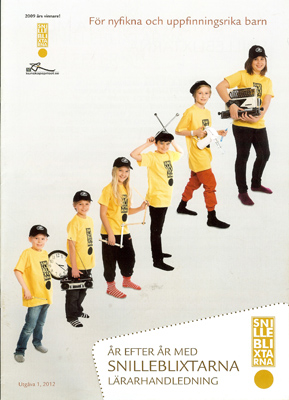

|
Startsidan
Böcker
Dramatik
Kultur-/barnprojekt
Margareta Lindberg |
|

|
|
2010-2012 fick jag i uppdrag av riksorganisationen Snilleblixtarna i Sverige att arbeta med en vidareutveckling av Snilleblixtkonceptet. Det resulterade i ett häfte: ÅR EFTER ÅR MED SNILLEBLIXTARNA- LÄRARHANDLEDNING och i ett omfattande material på nätet.
Mer om Snilleblixtarna hittar du på www.snilleblixtarna.se flik År efter år |